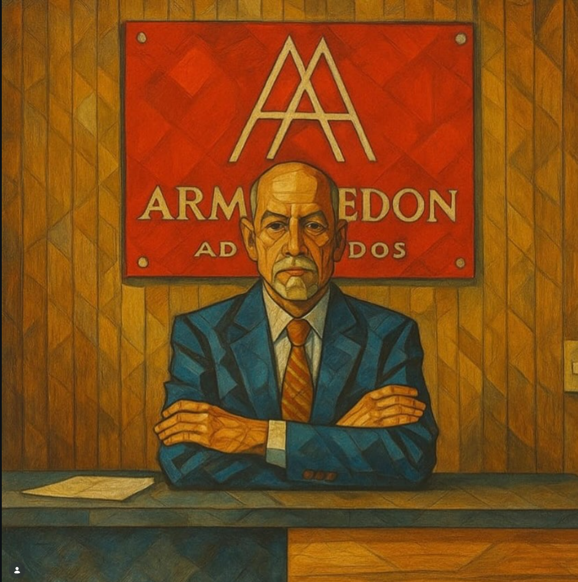

Direito Trabalhista
Atuação em rescisões, verbas trabalhistas, FGTS, horas extras, vínculo empregatício e demais direitos ligados à relação de trabalho.
O Armagedon Advogados atua na defesa dos direitos de trabalhadores, segurados do INSS e clientes que buscam orientação jurídica clara, responsável e profissional.
Atendimento presencial em São Paulo, no Tatuapé, e atendimento virtual para clientes de todo o Brasil.
Fundado em 1994 pelo advogado Ivair Aparecido de Lima, o Armagedon Advogados nasceu com o objetivo de oferecer uma advocacia acessível, firme e comprometida com a justiça.
Hoje, o escritório conta com a atuação dos sócios Ivair Aparecido de Lima e Leticia Molinardi Lima, reunindo experiência em Direito do Trabalho, Processo do Trabalho, Direito Previdenciário e benefícios por incapacidade.
Atuação voltada para orientação, prevenção e defesa dos direitos dos clientes.
Atuação em rescisões, verbas trabalhistas, FGTS, horas extras, vínculo empregatício e demais direitos ligados à relação de trabalho.
Acompanhamento de ações trabalhistas, audiências, acordos, defesas e estratégias processuais com responsabilidade técnica.
Orientação para aposentadorias, revisões, requerimentos administrativos e ações relacionadas ao INSS.
Atuação especializada em auxílio-doença, aposentadoria por incapacidade permanente e benefícios negados ou cessados pelo INSS.

Advogado pós-graduado em Direito do Trabalho e Processo do Trabalho pela ESA. Fundador do Armagedon Advogados desde 1994, com ampla experiência na defesa dos direitos trabalhistas e atendimento jurídico humanizado.
Pós-graduada em Direito Previdenciário Jurídico e Administrativo, especialista em benefícios por incapacidade e atuação estratégica em demandas previdenciárias.
Entre em contato e explique seu caso. O escritório retornará para orientar os próximos passos.
Chamar no WhatsAppTelefone: (11) 99328-7213
E-mail: molinardi@aasp.org.br
Atendimento presencial: Tatuapé, São Paulo/SP.
Atendimento online: Todo o Brasil.